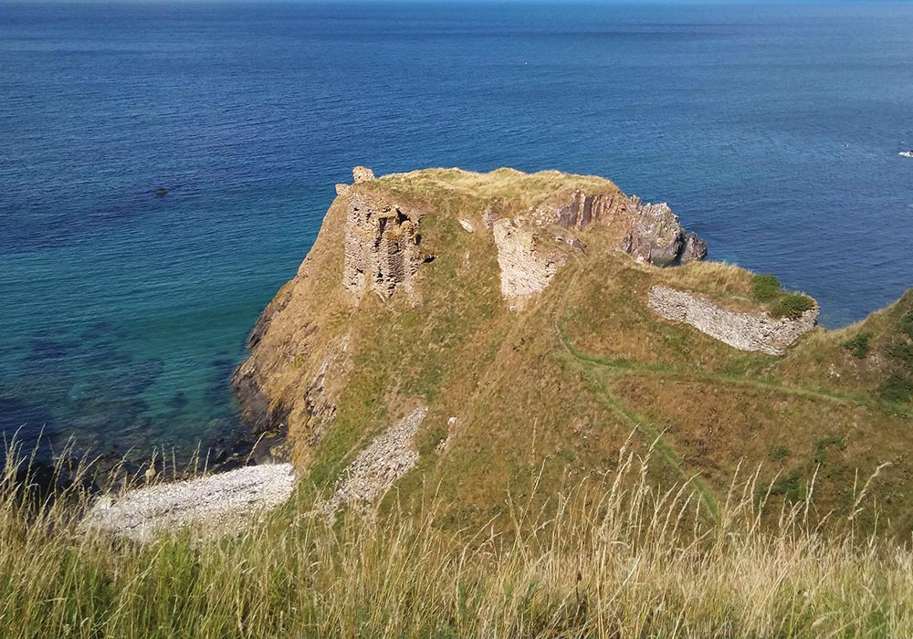
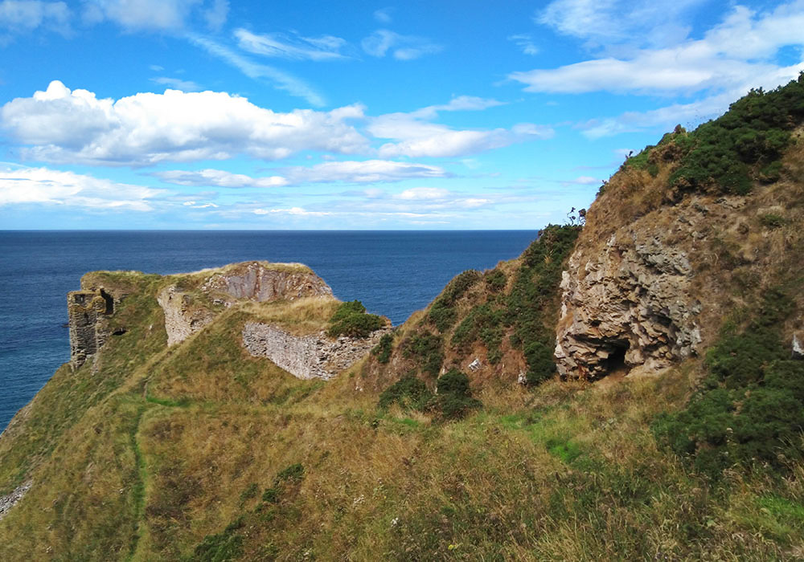
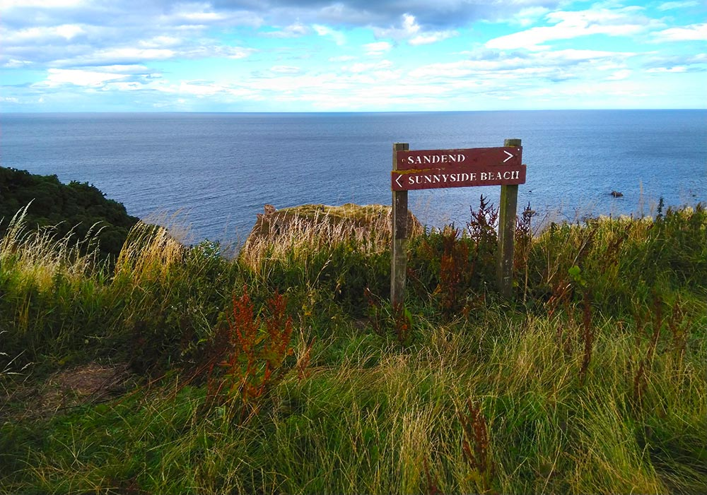
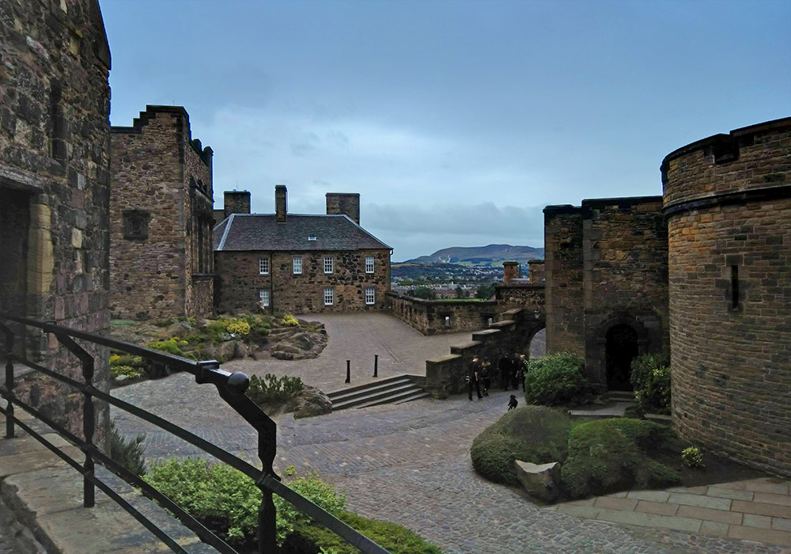
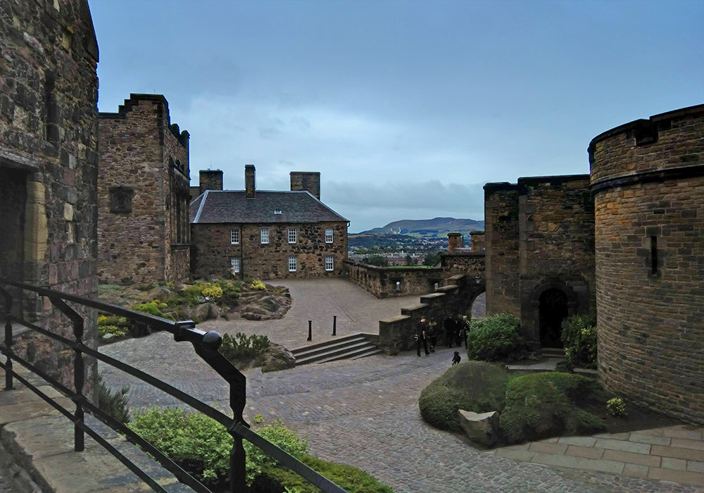

Framlingham Castle
Framlingham Castle is a Norman-era castle in Suffolk, England. Once a luxurious home for the powerful Houses of Howard and Mowbray, it was used as a workhouse for almost two hundred years, then as a drill hall and a county court. It is now a tourist attraction managed by English Heritage.
Findlater Castle
Findlater Castle is a small, ruined castle in Aberdeenshire, Scotland. It is at least eight hundred years old and is the historical seat of the Earls of Findlater and Seafield. It was abandoned in the 17th century and the ruins are now a scheduled monument, open for public exploration.




Sandend
Sandend is a 19th-century fishing village in Aberdeenshire, a few minutes' walk from Findlater Castle. These pictures were taken on from the cliff overlooking Findlater.


Moray
Moray is one of 32 locally governed council areas in northeastern Scotland. This mountain

 q
q
Edinburgh Castle
Edinburgh Castle is a historic fortress that has overlooked the city of Edinburgh for over a thousand years. Castle Rock has been inhabited since the Iron Age, and the castle itself dates back to the 12th century. As one of the most important strongholds in the Kingdom of Scotland, the castle is one of the most besieged places in history.

 
